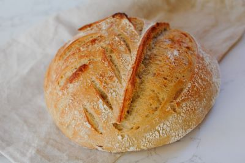
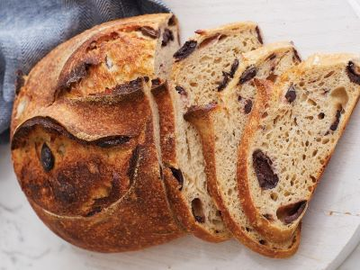
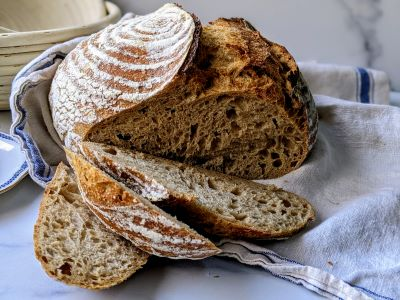

Our Signature Loaves

Classic Sourdough
Our signature loaf with a perfectly crispy crust.

Olive Rosemary
Mediterranean flavors in every slice.

Whole Wheat
Nutritious and delicious whole grain goodness.
Our Process
The Starter
Our sourdough starter is carefully maintained daily.
The Fermentation
24-36 hours of slow fermentation for perfect flavor.
The Baking
Baked to perfection in our artisanal ovens.